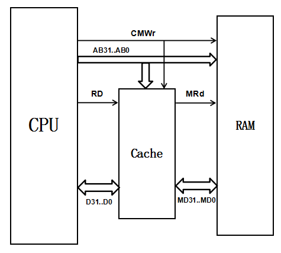
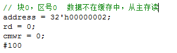
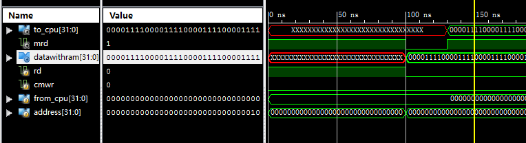
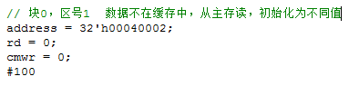
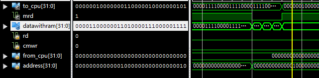
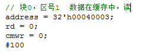
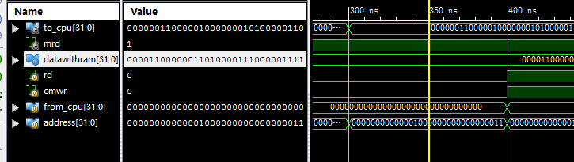

什么是缓存？说白了，把图书馆比作主存，所有的书都放在图书馆中，而你书桌前的书就相当于缓存数据。CPU从Cache读数据，读到就送CPU，若读不到，还必须考虑先从主存中读取数据，然后再将数据写到Cache中，之后，将数据送往CPU；其次，还要考虑CPU修改Cache和存储器数据的情况。
设计原理 直接相连映射 直接相联映象方式简单而直接，硬件实现很简单，访问速度也比较快，但是块的冲突率比较高。其主要原则是：主存中一块只能映象到Cache的一个特定的块中。
假设主存的块号为B，Cache的块号为b，则它们之间的映象关系可以表示为：
b = B mod Cb
其中，Cb是Cache的块容量。设主存的块容量为Mb，区容量为Me，则直接映象方法的关系如下图所示。把主存按Cache的大小分成区，一般主存容量为Cache容量的整数倍，主存每一个分区内的块数与Cache的总块数相等。直接映象方式只能把主存各个区中相对块号相同的那些块映象到Cache中同一块号的那个特定块中。例如，主存的块0只能映象到Cache的块0中，主存的块1只能映象到Cache的块1中，同样，主存区1中的块Cb（在区1中的相对块号是0），也只能映象到Cache的块0中。根据上面给出的地址映象规则，整个Cache地址与主存地址的低位部分是完全相同的。
地址变换过程 主存地址分为三个部分：区号E、块号B和块内地址W；Cache地址分为两部分：块号b和块内地址w。主存地址中的块号B与Cache地址中的块号b是完全相同的。同样，主存地址中的块内地址W与Cache地址中的块内地址w也是完全相同的，主存地址比Cache地址长出来的部分称为区号E。
在程序执行过程中，当要访问Cache时，为了实现主存块号到Cache块号的变换，需要有一个存放主存区号的小容量存储器（称为区表存储器），这个存储器的容量与Cache的块数相等，字长为主存地址中区号E的长度。
从主存地址到Cache地址的变换过程中，首先用主存地址中的块号B去访问区表存储器（用块号B作为区表存储器的地址，访问它），然后，将读出来的区号与主存地址中的区号E进行比较，比较结果相等，则Cache命中，表示要访问的那一块已经装入到Cache中了，可以直接用块号及块内地址组成的缓冲地址到缓存Cache中取数，把读出来的数据送往CPU；如果比较结果不相等，表示要访问的那个块还没有装入到Cache中，这时，要用主存地址去访问主存储器，先把该地址所在的块读到Cache中，然后再读取Cache中该地址的数据送CPU。
Cache、CPU、存储器 
实现Cache的存储体的方法是先实现一个8位的存储单元，然后用这个8位的存储单元来构成一个256Kb X 8位的Cache（地址18位）。
再实现一个14位的存储单元，然后，用这个14位的存储单元来构成一个16k X 14位的区表存储器（地址14位与块号B相同），用来存放区号（14位）。在这个部分中，还要实现一个区号E比较器，也就是如果主存地址的区号E和区表存储器中按块号B为地址取出的相应单元中的区号E相等，则Cache命中，否则Cache失效。
当Cache命中时，就将Cache存储体中相应单元的数据送往CPU，这个过程比较简单。当Cache失效时，就将主存中相应块中的数据读出写入Cache中，这样Cache控制器就要产生主存储器的读信号MRd（为0，读），由于每个Cache块占十六个单元，按32 位（4个字节）为访问存储器单位，那么需要连续访问4次主存，读取存储器中该块的数据，即16个字节，然后写入Cache相应块中，最后再修改区表存储器。至于访问主存的方法，要用到计数器。写数据时，如果Cache中有该地址数据，则修改，然后修改存储器该地址内容（MWr为1，写，为主存的写信号）；如果Cache中无该地址数据，就直接修改存储器该地址单元内容。读/写存储器时，要注意互锁情况。
设计方法 信号量 代码中包含多个信号量，下面先了解信号量的意义：
counterFromCache：块内偏移地址
signalToCache：在本设计中，当连续读取的相邻数据相同时没有办法触发cache中的写操作（将RAM读到的数据写入缓存），因此添加此变量实现触发
MRd：值为0时，读主存
CMWr：值为1，写主存；当缓存中命中时也写缓存
DataWithCache：读取并传到缓存的数据
MyCache中：
RD：值为0时读缓存
counterToRAM：同RAM中的counterFromCache
signalFromRAM：同RAM中的signalToCache
DataToCPU：传送数据到CPU
cacheData：缓存储存
blockTable：区表存储器
DataWithRAM：同RAM中的DataWithCache
Counter：初始化为0，当要读取数据时：若值为0，如果数据在缓存中，直接读取，结束，如果不在缓存中，更改counter值为1，counterToRAM设为0，在代码中counter值1会进入主存读取数据，读取四次即一整块后，再写区表存储器
注意要点 counter变量用来计数，一开始设为2-bit变量。由于具体实现的原因，临界条件设为counter为4，结果会一直出错，事实上counter值为3的时候再加1又变为0了，所以把counter设为3-bit。
MyCache模块根据RAM传进来的数据DataWithRAM的改变来将数据写到缓存中，但是连续读取的数据可能相同，于是添加signalFromRAM信号表明数据有读取，缓存一个在读相同数据时也要写入。
模块设计 cache主模块 将MyCache模块和RAM模块链接起来并实例MyCache和RAM。1
2
3
4
5
6
7
8
9
10
11
12
13
14
15
16
17
18
19
20
module Cache(rd, cmwr, from_cpu, to_cpu, address, mrd, datawithram
);
input rd, cmwr;
input [31 :0 ] address, from_cpu;
output mrd;
output [31 :0 ] to_cpu, datawithram;
wire rd, cmwr, mrd;
wire [1 :0 ] signal;
wire [2 :0 ] counter;
wire [31 :0 ] to_cpu, from_cpu, address, datawithram;
myCache MYCACHE(.RD (rd), .CMWr (cmwr), .MRd (mrd), .DataToCPU (to_cpu),
.DataFromCPU (from_cpu), .Address (address), .DataWithRAM (datawithram),
.counterToRAM (counter), .signalFromRAM (signal));
RAM myram(.CMWr (cmwr), .MRd (mrd), .counterFromCache (counter), .Address (address),
.DataWithCache (datawithram), .DataFromCPU (from_cpu), .signalToCache (signal));
endmodule
RAM模块 RAM模块主要是申明内存空间还有存储数据或取出数据：当MRd信号值为0时，需要读取内存中的某位置的数据到ram_data中，然后再写入cache中；而不管什么时候，只要CMWr信号为1，RAM都需要写入CPU送过来的数据。1
2
3
4
5
6
7
8
9
10
11
12
13
14
15
16
17
18
19
20
21
22
23
24
25
26
27
28
29
30
31
32
33
34
35
36
37
38
39
40
41
42
43
44
45
46
47
48
49
50
51
52
53
54
55
56
module RAM(CMWr, MRd, counterFromCache, Address, DataWithCache, DataFromCPU, signalToCache
);
input CMWr, MRd;
input [2 :0 ] counterFromCache;
input [31 :0 ] Address, DataFromCPU;
output [1 :0 ] signalToCache;
output [31 :0 ] DataWithCache;
reg [7 :0 ] register [0 :20'hfffff ];
reg [1 :0 ] signalToCache;
reg [31 :0 ] DataWithCache, wordNum;
integer i;
initial begin
signalToCache = 0 ;
for (i = 0 ; i <= 20'hfffff ; i= i+1 )
register[i] = 8'b00001111 ;
register[32'h00040000 ] = 0 ;
register[32'h00040001 ] = 1 ;
register[32'h00040002 ] = 2 ;
register[32'h00040003 ] = 3 ;
register[32'h00040004 ] = 4 ;
register[32'h00040005 ] = 5 ;
register[32'h00040006 ] = 6 ;
register[32'h00040007 ] = 7 ;
register[32'h00040008 ] = 8 ;
register[32'h00040009 ] = 9 ;
register[32'h0004000A ] = 10 ;
register[32'h0004000B ] = 11 ;
register[32'h0004000C ] = 12 ;
register[32'h0004000D ] = 13 ;
register[32'h0004000E ] = 14 ;
register[32'h0004000F ] = 15 ;
end
always @(CMWr or MRd or counterFromCache) begin
if (MRd == 0 ) begin
wordNum = Address[31 :4 ]*16 +counterFromCache*4 ;
DataWithCache[31 :24 ] = register[wordNum];
DataWithCache[23 :16 ] = register[wordNum+1 ];
DataWithCache[15 :8 ] = register[wordNum+2 ];
DataWithCache[7 :0 ] = register[wordNum+3 ];
signalToCache = signalToCache+1 ;
end else if (CMWr == 1 ) begin
register[Address] = DataFromCPU[31 :24 ];
register[Address+1 ] = DataFromCPU[23 :16 ];
register[Address+2 ] = DataFromCPU[15 :8 ];
register[Address+3 ] = DataFromCPU[7 :0 ];
end
end
endmodule
MyCache模块 读取数据时，若数据在缓存中则直接读取，结束；如果不在，则更改counter的值然后进入主存读取，连续读取一整块后写区表存储器并将数据送到CPU；1
2
3
4
5
6
7
8
9
10
11
12
13
14
15
16
17
18
19
20
21
22
23
24
25
26
27
28
29
30
31
32
33
34
35
36
37
38
39
40
41
42
43
44
45
46
47
48
49
50
51
52
53
54
55
56
57
58
59
60
61
62
63
64
65
66
67
68
69
70
71
72
73
74
75
module myCache(RD, CMWr, MRd, DataToCPU, DataFromCPU, Address, DataWithRAM, counterToRAM, signalFromRAM
);
input RD, CMWr;
input [1 :0 ] signalFromRAM;
input [31 :0 ] DataFromCPU, DataWithRAM, Address;
output MRd;
output [2 :0 ] counterToRAM;
output [31 :0 ] DataToCPU;
reg [7 :0 ] cacheData [0 :18'h3ffff ];
reg [14 :0 ] blockTable [0 :14'h3fff ];
reg MRd;
reg [2 :0 ] counter, counterToRAM;
reg [13 :0 ] blockNum;
reg [13 :0 ] partNum;
reg [31 :0 ] cacheAddress, DataToCPU;
integer i;
initial begin
for (i = 0 ; i <= 14'h3fff ; i=i+1 )
blockTable[i][14 ] = 0 ;
MRd = 1 ;
counter = 0 ;
end
always @(RD or CMWr or Address or DataFromCPU or DataWithRAM or signalFromRAM) begin
blockNum = Address[17 :4 ];
partNum = Address[31 :18 ];
if (RD == 0 && counter == 0 ) begin
if (partNum == blockTable[blockNum][13 :0 ] && blockTable[blockNum][14 ] == 1 ) begin
cacheAddress = 16 *blockNum+Address[3 :0 ];
DataToCPU[31 :24 ] = cacheData[cacheAddress];
DataToCPU[23 :16 ] = cacheData[cacheAddress+1 ];
DataToCPU[15 :8 ] = cacheData[cacheAddress+2 ];
DataToCPU[7 :0 ] = cacheData[cacheAddress+3 ];
end else begin
MRd = 0 ;
counter = 1 ;
counterToRAM = 0 ;
end
end else if (RD == 0 && counter >= 1 ) begin
cacheAddress = 16 *blockNum+4 *(counter-1 );
cacheData[cacheAddress] = DataWithRAM[31 :24 ];
cacheData[cacheAddress+1 ] = DataWithRAM[23 :16 ];
cacheData[cacheAddress+2 ] = DataWithRAM[15 :8 ];
cacheData[cacheAddress+3 ] = DataWithRAM[7 :0 ];
if (counter == 4 ) begin
MRd = 1 ;
cacheAddress = 16 *blockNum+Address[3 :0 ];
DataToCPU[31 :24 ] = cacheData[cacheAddress];
DataToCPU[23 :16 ] = cacheData[cacheAddress+1 ];
DataToCPU[15 :8 ] = cacheData[cacheAddress+2 ];
DataToCPU[7 :0 ] = cacheData[cacheAddress+3 ];
blockTable[blockNum][13 :0 ] = partNum;
blockTable[blockNum][14 ] = 1 ;
counter = 0 ;
end else begin
#10
counter = counter+1 ;
counterToRAM = counter-1 ;
end
end else if (CMWr == 1 ) begin
if (partNum == blockTable[blockNum][13 :0 ] && blockTable[blockNum][14 ] == 1 ) begin
cacheAddress = 16 *blockNum+Address[3 :0 ];
cacheData[cacheAddress] = DataFromCPU[31 :24 ];
cacheData[cacheAddress+1 ] = DataFromCPU[23 :16 ];
cacheData[cacheAddress+2 ] = DataFromCPU[15 :8 ];
cacheData[cacheAddress+3 ] = DataFromCPU[7 :0 ];
end
end
end
endmodule
测试文件 测试代码 一下文件方便测试，代码不唯一：1
2
3
4
5
6
7
8
9
10
11
12
13
14
15
16
17
18
19
20
21
22
23
24
25
26
27
28
29
30
31
32
33
34
35
36
37
38
39
40
41
42
43
44
45
46
47
48
49
50
51
52
53
54
55
56
57
58
59
60
61
62
63
64
65
66
67
68
69
70
71
72
73
74
75
76
77
78
module test_tf;
reg rd;
reg cmwr;
reg [31 :0 ] from_cpu;
reg [31 :0 ] address;
wire [31 :0 ] to_cpu;
wire mrd;
wire [31 :0 ] datawithram;
Cache uut (
.rd (rd),
.cmwr (cmwr),
.from_cpu (from_cpu),
.to_cpu (to_cpu),
.address (address),
.mrd (mrd),
.datawithram (datawithram)
);
initial begin
rd = 1 ;
cmwr = 0 ;
from_cpu = 0 ;
address = 0 ;
#100
address = 32'h00000002 ;
rd = 0 ;
cmwr = 0 ;
#100
address = 32'h00040002 ;
rd = 0 ;
cmwr = 0 ;
#100
address = 32'h00040003 ;
rd = 0 ;
cmwr = 0 ;
#100
address = 32'h00040007 ;
from_cpu = 32'haabbccdd ;
rd = 1 ;
cmwr = 1 ;
#100
address = 32'h00040005 ;
rd = 0 ;
cmwr = 0 ;
#100
address = 32'h00000002 ;
from_cpu = 32'h11223344 ;
rd = 1 ;
cmwr = 1 ;
#100
address = 32'h00000002 ;
rd = 0 ;
cmwr = 0 ;
end
endmodule
测试过程分析 由于测试过程复杂而且大同小异，这里不一一说明，主要是看波形图和变量值是否符合预期。
测试1 

可以看到波形图中在100ns之后mdr有一小段时间变为0，这就是从主存拿数据的阶段
测试2 

读取的地址在内存中每个字节的初值不同，所以可以观察到datawithram值有改变
测试3 
